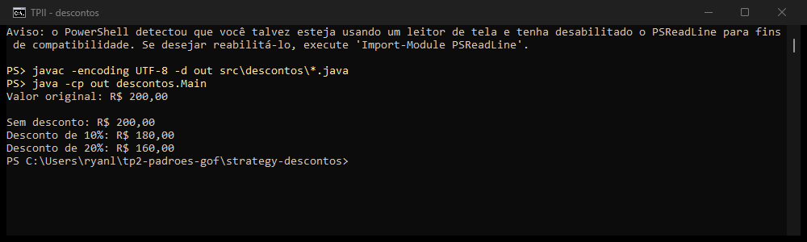
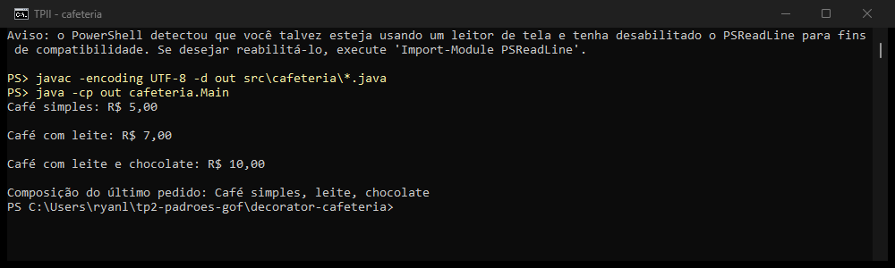

Tema: Padrões de Projeto Strategy e Decorator
Disciplina: Técnicas de Programação II (TPII)
Professora: Me. Sirley Ambrosia Vitorio Addão
Aluno: Ryan Leite
Linguagem: Java (testado com o JDK 21)
Repositório GitHub: https://github.com/Ryderzin/tp2-padroes-gof
1. O que são padrões de projeto GoF e qual é sua finalidade?
Padrões de projeto são soluções reutilizáveis para problemas que se repetem no projeto de software orientado a objetos. Cada padrão tem um nome, descreve o problema que resolve, a estrutura da solução (classes, interfaces e como elas colaboram) e as consequências de usá-lo. O termo GoF (Gang of Four, "gangue dos quatro") vem dos quatro autores do livro Design Patterns: Elements of Reusable Object-Oriented Software (1994): Erich Gamma, Richard Helm, Ralph Johnson e John Vlissides, que catalogaram 23 padrões.
A finalidade é aproveitar soluções já testadas em vez de reinventá-las, criando um vocabulário comum entre desenvolvedores ("aqui usamos um Strategy" já comunica toda uma estrutura). Os padrões ajudam a deixar o código mais flexível, com baixo acoplamento, fácil de manter e de estender. Eles seguem princípios como "programe para uma interface, não para uma implementação" e "prefira composição de objetos à herança de classes".
2. Quais são as três categorias dos padrões GoF? Explique brevemente cada uma.
| Categoria | Finalidade | Padrões |
|---|---|---|
| Criacionais | Tratam de como os objetos são criados, escondendo a lógica de criação e deixando o sistema independente de quais classes concretas são instanciadas. | Abstract Factory, Builder, Factory Method, Prototype, Singleton |
| Estruturais | Tratam de como classes e objetos são combinados para formar estruturas maiores, mantendo essas estruturas flexíveis e eficientes. | Adapter, Bridge, Composite, Decorator, Facade, Flyweight, Proxy |
| Comportamentais | Tratam de como os objetos se comunicam e dividem responsabilidades, e de como os algoritmos são distribuídos entre eles. | Chain of Responsibility, Command, Interpreter, Iterator, Mediator, Memento, Observer, State, Strategy, Template Method, Visitor |
3. O que é o padrão Strategy e em quais situações ele pode ser utilizado?
O Strategy é um padrão comportamental. Segundo o GoF, ele define uma família de algoritmos, encapsula cada um deles numa classe própria e os torna intercambiáveis, permitindo que o algoritmo varie independentemente de quem o utiliza. A estrutura tem três partes: a interface da estratégia (o contrato comum), as estratégias concretas (cada uma com um algoritmo) e o contexto, que guarda uma referência para a interface e delega a ela o trabalho, sem saber qual implementação está usando.
Situações de uso:
if/else ou switch para escolher o comportamento: cada ramo vira uma estratégia;4. O que é o padrão Decorator e em quais situações ele pode ser utilizado?
O Decorator é um padrão estrutural. Segundo o GoF, ele acrescenta responsabilidades a um objeto de forma dinâmica, sendo uma alternativa flexível à criação de subclasses para estender funcionalidades. O decorador implementa a mesma interface do objeto que decora e guarda uma referência para ele ("embrulha" o objeto). Quando um método é chamado, o decorador repassa a chamada ao objeto embrulhado e acrescenta seu próprio comportamento antes ou depois. Como o decorador também é do mesmo tipo, é possível empilhar vários decoradores, um sobre o outro.
Situações de uso:
final);new BufferedReader(new InputStreamReader(System.in))), que acrescentam buffer, compressão ou criptografia a um fluxo base, e Collections.unmodifiableList(lista).5. Qual é a principal diferença entre os padrões Strategy e Decorator?
A diferença está na intenção. O Strategy troca o comportamento: o contexto usa uma estratégia por vez, escolhida entre algoritmos alternativos que fazem a mesma tarefa de formas diferentes; muda-se "as entranhas" do objeto. O Decorator acrescenta comportamento: os decoradores se somam ao objeto original, podem ser combinados e empilhados, e o objeto continua sendo do mesmo tipo; muda-se "a pele" do objeto. Além disso, o Strategy é um padrão comportamental (foca em algoritmos intercambiáveis) e o Decorator é estrutural (foca em compor objetos para estender funcionalidades). No exemplo desta atividade: o desconto é ou 10% ou 20% (Strategy), enquanto o café pode ter leite e chocolate ao mesmo tempo (Decorator).
Projeto: strategy-descontos (pacote descontos).
A interface EstrategiaDesconto é o contrato comum. SemDesconto, DescontoDezPorCento e DescontoVintePorCento são as estratégias concretas. A CalculadoraDesconto é o contexto: recebe uma estratégia e apenas delega o cálculo a ela, sem nenhum if/else. A estratégia pode ser trocada em tempo de execução com setEstrategia. Além do método calcularDesconto(double valor) pedido no enunciado, a interface tem getNome(), usado só para exibir o nome de cada desconto no resultado.
| Papel no padrão | Classe |
|---|---|
| Strategy (interface) | EstrategiaDesconto |
| Estratégias concretas | SemDesconto, DescontoDezPorCento, DescontoVintePorCento |
| Contexto | CalculadoraDesconto |
| Cliente | Main |
package descontos; /** * Strategy: define o contrato comum a todas as formas de calcular desconto. */ public interface EstrategiaDesconto { /** * Aplica o desconto sobre o valor da compra. * * @param valor valor original da compra * @return valor final, já com o desconto aplicado */ double calcularDesconto(double valor); /** Nome da estratégia, usado para exibir o resultado. */ String getNome(); }
package descontos; /** * Estratégia concreta: mantém o valor original da compra. */ public class SemDesconto implements EstrategiaDesconto { @Override public double calcularDesconto(double valor) { return valor; } @Override public String getNome() { return "Sem desconto"; } }
package descontos; /** * Estratégia concreta: reduz o valor da compra em 10%. */ public class DescontoDezPorCento implements EstrategiaDesconto { @Override public double calcularDesconto(double valor) { return valor * 0.90; } @Override public String getNome() { return "Desconto de 10%"; } }
package descontos; /** * Estratégia concreta: reduz o valor da compra em 20%. */ public class DescontoVintePorCento implements EstrategiaDesconto { @Override public double calcularDesconto(double valor) { return valor * 0.80; } @Override public String getNome() { return "Desconto de 20%"; } }
package descontos; /** * Contexto do padrão Strategy: usa uma estratégia de desconto sem saber * qual é a implementação concreta. Não há if/else para escolher o desconto; * basta trocar a estratégia. */ public class CalculadoraDesconto { private EstrategiaDesconto estrategia; public CalculadoraDesconto(EstrategiaDesconto estrategia) { this.estrategia = estrategia; } /** Permite trocar o comportamento em tempo de execução. */ public void setEstrategia(EstrategiaDesconto estrategia) { this.estrategia = estrategia; } public EstrategiaDesconto getEstrategia() { return estrategia; } public double calcular(double valor) { return estrategia.calcularDesconto(valor); } }
package descontos; import java.util.List; import java.util.Locale; /** * Testa as três estratégias de desconto com uma compra de R$ 200,00. */ public class Main { private static final Locale PT_BR = Locale.forLanguageTag("pt-BR"); public static void main(String[] args) { double valorCompra = 200.00; System.out.println("Valor original: " + formatar(valorCompra)); System.out.println(); List<EstrategiaDesconto> estrategias = List.of( new SemDesconto(), new DescontoDezPorCento(), new DescontoVintePorCento()); CalculadoraDesconto calculadora = new CalculadoraDesconto(new SemDesconto()); for (EstrategiaDesconto estrategia : estrategias) { calculadora.setEstrategia(estrategia); double valorFinal = calculadora.calcular(valorCompra); System.out.println(estrategia.getNome() + ": " + formatar(valorFinal)); } } private static String formatar(double valor) { return String.format(PT_BR, "R$ %,.2f", valor); } }

Projeto: decorator-cafeteria (pacote cafeteria).
A interface Cafe define getDescricao() e getPreco(). CafeSimples é o café base (R$ 5,00). A classe abstrata CafeDecorator também implementa Cafe e recebe no construtor o café que vai decorar. LeiteDecorator (+ R$ 2,00) e ChocolateDecorator (+ R$ 3,00) estendem o decorador, chamam o café embrulhado e somam o seu valor e a sua descrição. Os ingredientes são combinados em tempo de execução, sem alterar CafeSimples e sem classes para cada combinação.
| Papel no padrão | Classe |
|---|---|
| Componente (interface) | Cafe |
| Componente concreto | CafeSimples |
| Decorator (abstrato) | CafeDecorator |
| Decoradores concretos | LeiteDecorator, ChocolateDecorator |
| Cliente | Main |
package cafeteria; /** * Componente do padrão Decorator: o que todo café (simples ou decorado) sabe fazer. */ public interface Cafe { String getDescricao(); double getPreco(); }
package cafeteria; /** * Componente concreto: o café base, sem adicionais. */ public class CafeSimples implements Cafe { @Override public String getDescricao() { return "Café simples"; } @Override public double getPreco() { return 5.00; } }
package cafeteria; /** * Decorator abstrato: também é um Cafe e guarda o café que está "embrulhando". * Por padrão, repassa as chamadas ao café embrulhado; as subclasses * acrescentam a descrição e o preço do ingrediente. */ public abstract class CafeDecorator implements Cafe { protected final Cafe cafe; protected CafeDecorator(Cafe cafe) { this.cafe = cafe; } @Override public String getDescricao() { return cafe.getDescricao(); } @Override public double getPreco() { return cafe.getPreco(); } }
package cafeteria; /** * Decorator concreto: acrescenta leite (R$ 2,00). */ public class LeiteDecorator extends CafeDecorator { public LeiteDecorator(Cafe cafe) { super(cafe); } @Override public String getDescricao() { return cafe.getDescricao() + ", leite"; } @Override public double getPreco() { return cafe.getPreco() + 2.00; } }
package cafeteria; /** * Decorator concreto: acrescenta chocolate (R$ 3,00). */ public class ChocolateDecorator extends CafeDecorator { public ChocolateDecorator(Cafe cafe) { super(cafe); } @Override public String getDescricao() { return cafe.getDescricao() + ", chocolate"; } @Override public double getPreco() { return cafe.getPreco() + 3.00; } }
package cafeteria; import java.util.Locale; /** * Demonstra a personalização do café empilhando decoradores. */ public class Main { private static final Locale PT_BR = Locale.forLanguageTag("pt-BR"); public static void main(String[] args) { Cafe cafe = new CafeSimples(); exibir("Café simples", cafe); cafe = new LeiteDecorator(cafe); exibir("Café com leite", cafe); cafe = new ChocolateDecorator(cafe); exibir("Café com leite e chocolate", cafe); System.out.println("Composição do último pedido: " + cafe.getDescricao()); } private static void exibir(String titulo, Cafe cafe) { System.out.println(titulo + ": " + String.format(PT_BR, "R$ %,.2f", cafe.getPreco())); System.out.println(); } }

1. No exemplo do Strategy, qual é a vantagem de utilizar uma interface para representar as estratégias de desconto?
A interface EstrategiaDesconto funciona como um contrato: a CalculadoraDesconto depende apenas dela, e não das classes concretas. Com isso:
calcularDesconto;if/else: o polimorfismo escolhe o comportamento certo, então a calculadora não precisa testar o tipo de desconto;setEstrategia), como o Main faz no laço;2. Como seria possível adicionar uma nova estratégia de desconto de 30%?
Basta criar uma nova classe que implemente EstrategiaDesconto e usá-la no cliente. CalculadoraDesconto e as outras estratégias não mudam:
public class DescontoTrintaPorCento implements EstrategiaDesconto { @Override public double calcularDesconto(double valor) { return valor * 0.70; } @Override public String getNome() { return "Desconto de 30%"; } } // Uso: calculadora.setEstrategia(new DescontoTrintaPorCento()); calculadora.calcular(200.00); // R$ 140,00
3. No exemplo do Decorator, como os ingredientes são adicionados ao café sem alterar a classe original?
Por composição, e não por herança da classe original. Cada decorador implementa a mesma interface Cafe e guarda uma referência para o café que recebeu no construtor. Ao calcular o preço, ele pergunta o preço ao café embrulhado e soma o valor do seu ingrediente; o mesmo acontece com a descrição. Como o resultado continua sendo um Cafe, ele pode ser embrulhado de novo, formando uma cadeia:
Cafe cafe = new ChocolateDecorator(new LeiteDecorator(new CafeSimples()));
cafe.getPreco()
-> ChocolateDecorator: getPreco() do café embrulhado + 3,00
-> LeiteDecorator: getPreco() do café embrulhado + 2,00
-> CafeSimples: 5,00
= 5,00 + 2,00 + 3,00 = R$ 10,00
A classe CafeSimples nunca é modificada, e não há uma classe para cada combinação: com 2 ingredientes, são 2 decoradores que podem ser combinados livremente (inclusive repetidos, como leite duplo), em vez de uma subclasse para cada mistura possível.
4. Como seria possível adicionar um novo ingrediente, como chantilly, utilizando o padrão Decorator?
Criando um novo decorador que estenda CafeDecorator, sem alterar nenhuma classe existente. Supondo um preço de R$ 2,50 para o chantilly (o enunciado não define esse valor):
public class ChantillyDecorator extends CafeDecorator { public ChantillyDecorator(Cafe cafe) { super(cafe); } @Override public String getDescricao() { return cafe.getDescricao() + ", chantilly"; } @Override public double getPreco() { return cafe.getPreco() + 2.50; } } // Uso: combina com os ingredientes que já existem Cafe pedido = new ChantillyDecorator(new ChocolateDecorator(new CafeSimples())); pedido.getPreco(); // 5,00 + 3,00 + 2,50 = R$ 10,50
java.io.BufferedReader e java.util.Locale). Disponível em: https://docs.oracle.com/en/java/javase/21/docs/api/. Acesso em: 25 nov. 2026.Os dois projetos (com instruções para compilar e executar no README.md) estão em: https://github.com/Ryderzin/tp2-padroes-gof